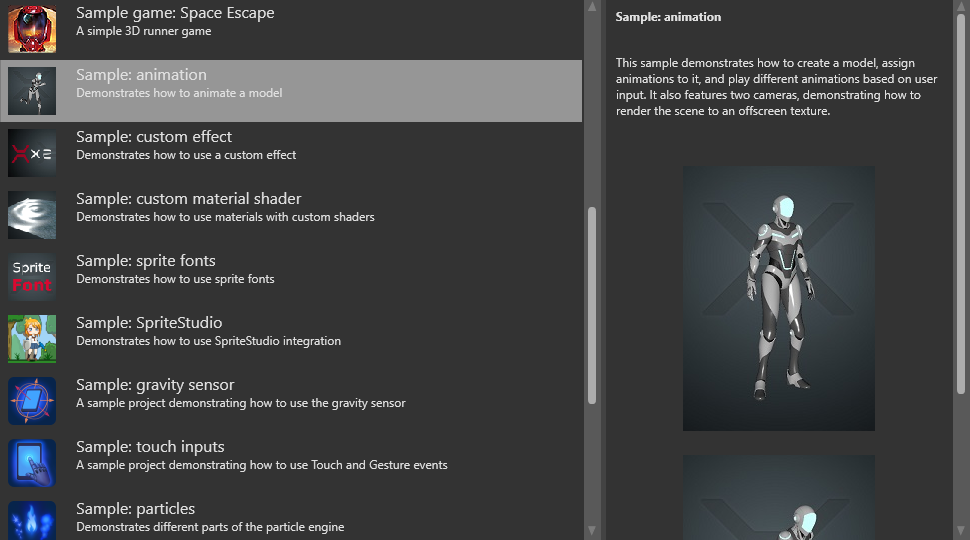

Animation
Designer Programmer
3D models are animated by adding three kinds of asset:
- a skeleton
- a skinned model
- an animation clip
Note
For information about 2D animation, see Sprites.
Skeletons
Skeletons are digital structures that describe deformation patterns of 3D models. Skeletons are made of bones that form a hierarchy. When parent bones change their position, they also affect the positions of child bones. For example, a hand bone might have five child bones (the fingers and thumb); when the hand moves up and down, the fingers and thumb move with it.
Skeletons don't have to resemble the skeletons of real humans or animals. You can make skeletons to animate any 3D model.
Note
There's currently no way to visualize skeletons in Game Studio.
Skinned models
Skinning is the process of assigning weights to vertices and bones they depend on. Each vertex usually depends on one to four bones.
Skinned models are models that have been skinned to match a skeleton. The skin describes how vertices of the mesh transform when bones move.
Note
In Game Studio, you can only create simple 3D models such as spheres and cubes. For information about how to do this, see Create assets. To create more complex models, use dedicated software like 3DS Max, Maya, or Blender, then import the model into Game Studio.
Animation clips
Animation clips describe the pose of a skeleton at a particular moment. The skeleton moves according to the animation. The mesh vertices transform (skin) to match the current pose.
Animation samples
For an example of how animations work in Stride, load the Sample: animation sample project.

The templates First-person shooter, Third-person platformer and Top-down RPG also include some advanced animation techniques.